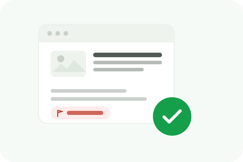

A bad experience posted as a public review sits on your profile where you can respond and report it through a defined process. The same complaint posted in a neighborhood Facebook group or local community page behaves completely differently, it spreads through comments and shares, the group has its own moderators, and Facebook's own reporting tools weren't built with business disputes specifically in mind.

A review lives on a profile with a visible policy framework behind it. A group post lives inside a community that a specific set of admins or moderators controls, and Facebook's platform-wide reporting tools generally defer to that group's own rules before stepping in. That means your first and most effective point of contact often isn't Facebook at all, it's whoever runs the group.
Most local Facebook groups have posted rules, commonly against naming specific businesses in complaint posts, or requiring a direct resolution attempt first. If the post violates the group's own stated rules, that's usually your fastest path, a message to the admin citing the specific rule tends to move faster than a generic Facebook report.
Facebook's reporting categories (harassment, false information, hate speech) apply inside groups the same as anywhere else on the platform, and a post that crosses into one of those categories, not just an unflattering opinion, can be reported directly through the post's own report option. Expect this to move slower than a group-admin resolution since it goes through a general content-review queue.
This sits closer to the Reddit thread scenario than a direct review-removal case: there's no formal "business review" status to dispute, just ordinary platform content inside a community you don't control, which makes the human relationship with the group's admins more useful than the reporting form itself.
Screenshot the original post, the timestamp, and any particularly damaging comments before you report or reach out, group posts get edited, deleted by the original poster, or buried by newer activity faster than a platform review does. Having the original wording on hand strengthens both an admin request and a formal Facebook report if it comes to that.
If the person posting is identifiable and the complaint reads as genuine frustration rather than an attempt to cause lasting damage, a private message offering to resolve the issue directly can defuse a group post faster than any reporting process, especially before it's gathered many comments. Many people who post a complaint in a local group are looking for acknowledgment as much as resolution, and a visible update in the comments ("this has been resolved, thanks for the heads up") often does more for how the group perceives your business than a successful takedown ever could.
A single frustrated post rarely needs more than the steps above, but a sustained pattern, the same group repeatedly becoming a venue for coordinated complaints, or a post containing claims you can show are deliberately false, is a different situation. At that point it's worth treating the pattern the same way you would any other coordinated negative campaign: documenting each instance, keeping the admin relationship intact for the group-level posts, and reserving a formal platform report for the content that actually crosses a policy line.
We handle content takedowns and reporting across platforms, not just formal review systems.